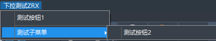
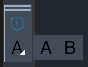

ZRX可以通过调用COM接口方式创建自定义的菜单、工具栏。
这种方式创建的菜单界面是临时的，仅在当前运行中的ZWCAD进程有效，下次打开ZWCAD则需要重新创建。 如果需要永久保存的自定义菜单界面，可以考虑使用创建CUIX菜单文件的方式，这种方式只需要加载一次CUIX文件则可以使菜单界面永久存在。
导入COM接口
在工程预编译头文件中添加以下代码：
#import "C:\\Program Files\\Common Files\\ZWSoft Shared\\zwcad25.tlb" no_namespace named_guids
添加后可以先编译一次工程，这样后面编写代码时编辑器不会出现未定义的提示。
获取自定义菜单文件
自定义菜单文件是用于存储定制化界面样式的文件，常见的有菜单栏、工具栏和Ribbon栏等，在ZWCAD中可以通过CUI命令查看当前加载菜单文件内容。
当使用COM接口修改菜单文件时，需要先获取一个菜单组对象，再对其中的菜单栏和工具栏进行添加或修改。由于COM接口修改的内容不会保存到CUI文件中，所以可以直接获取"ZWCAD"主菜单进行修改。
IZcadApplication* pZcad = nullptr;
HRESULT hr = NOERROR;
LPUNKNOWN pUnk = NULL;
LPDISPATCH pZcadDisp = zcedGetIDispatch(TRUE);
// 获取当前ZWCAD进程
hr = pZcadDisp->QueryInterface(IID_IZcadApplication, (void**)&pZcad);
pZcadDisp->Release();
if (FAILED(hr))
return;
pZcad->put_Visible(true);
// 获取菜单项数量
IZcadMenuBar* pMenuBar = pZcad->GetMenuBar();
long menuCounts = pMenuBar->GetCount();
pMenuBar->Release();
// 获取所有菜单组
IZcadMenuGroups* pMenuGroups = pZcad->GetMenuGroups();
pZcad->Release();
VARIANT index;
VariantInit(&index);
V_VT(&index) = VT_BSTR;
V_BSTR(&index) = ::SysAllocString(L"ZWCAD");
// 找到ZWCAD菜单组
IZcadMenuGroup* pMenuGroup = pMenuGroups->Item(index);
pMenuGroups->Release();
自定义菜单栏

创建下拉菜单
创建自定义的下拉菜单需要先在当前编辑的MenuGroup对象的Menus中添加一个新下拉菜单项，再通过该下拉菜单项添加所需的按钮或分隔条。
IZcadPopupMenus* pPopUpMenus = pMenuGroup->GetMenus();
pMenuGroup->Release();
// 添加下拉菜单项
IZcadPopupMenu* pPopUpMenu = pPopUpMenus->Add(L"下拉测试ZRX");
V_VT(&index) = VT_I4;
V_I4(&index) = 0;
pPopUpMenu->AddMenuItem(index, L"测试按钮1", L"_about\n");
V_I4(&index) = 1;
pPopUpMenu->AddSeparator(index);
创建子菜单
子菜单可以作为一个扩展菜单，将统一类别的按钮放在一起，方便设计师快速找到所需的功能。
// 子菜单可以当作一个独立的下拉菜单操作
V_I4(&index) = 2;
IZcadPopupMenu* pSubMenu = pPopUpMenu->AddSubMenu(index, L"测试子菜单");
V_I4(&index) = 0;
pSubMenu->AddMenuItem(index, L"测试按钮2", L"vernum\n");
V_I4(&index) = menuCounts;
添加自定义菜单到菜单栏
// 将菜单插入到最后
V_I4(&index) = menuCounts;
pPopUpMenu->InsertInMenuBar(index);
// 使用完的对象需要手动释放
pSubMenu->Release();
pPopUpMenu->Release();
pPopUpMenus->Release();
自定义工具栏

创建工具栏
首先需要在当前编辑的菜单组中添加一个新的Toolbar对象作为自定义工具栏的载体，然后可以向这个对象中添加所需的工具按钮。
// 创建工具栏
IZcadToolbars* pToolbars = pMenuGroup->GetToolbars();
pMenuGroup->Release();
IZcadToolbar* pToolbar = pToolbars->Add(L"工具栏测试ZRX");
pToolbars->Release();
V_VT(&index) = VT_I4;
V_I4(&index) = 0;
// 添加按钮
IZcadToolbarItem* pToolbarItem = pToolbar->AddToolbarButton(index, L"关于", L"软件信息", L"_about\n");
// 图片所在路径需要加入到支持文件搜索路径中
pToolbarItem->SetBitmaps(L"16x16.bmp", L"32x32.bmp");
pToolbarItem->Release();
添加弹出式工具栏按钮
弹出式工具栏实际上就是将另一个工具栏链接到当前工具栏中，所以可以将菜单组中已有的工具栏或新建一个工具栏，然后通过AttachToolbarToFlyout方法添加到当前工具栏中。
V_I4(&index) = 1;
// 创建一个工具栏按钮，第五个参数是否为弹出按钮设置为true
IZcadToolbarItem* pFlyoutBtn = pToolbar->AddToolbarButton(index, L"弹出按钮", L"", L"", VARIANT_TRUE);
IZcadToolbar* flyout = pToolbars->Add(L"弹出工具栏");
// 将弹出的工具栏设置为隐藏
flyout->PutVisible(VARIANT_FALSE);
V_I4(&index) = 0;
IZcadToolbarItem* item1 = flyout->AddToolbarButton(index, L"版本号", L"显示当前版本号", L"vernum\n");
item1->SetBitmaps(L"a_16x16.bmp", L"a_32x32.bmp");
item1->Release();
V_I4(&index) = 1;
IZcadToolbarItem* item2 = flyout->AddToolbarButton(index, L"直线", L"绘制一条直线", L"_line\n");
item2->SetBitmaps(L"b_16x16.bmp", L"b_32x32.bmp");
item2->Release();
pFlyoutBtn->AttachToolbarToFlyout(L"ZWCAD", L"弹出工具栏");
flyout->Release();
pFlyoutBtn->Release();
pToolbar->PutVisible(VARIANT_TRUE);
工具栏默认位置
工具栏可以通过Dock方法默认停靠到绘图区域的上下左右四个边上，也可以通过Float方法设置浮动时放置的位置。
// 设置工具栏默认停靠位置
pToolbar->Dock(ZcToolbarDockStatus::zcToolbarDockLeft);
// 设置工具栏浮动放置位置
// top:距离屏幕上边缘像素，left:距离屏幕左边缘像素，numberFloatFows:水平时工具栏行数
pToolbar->Float(200, 200, 1);
pToolbar->Release();